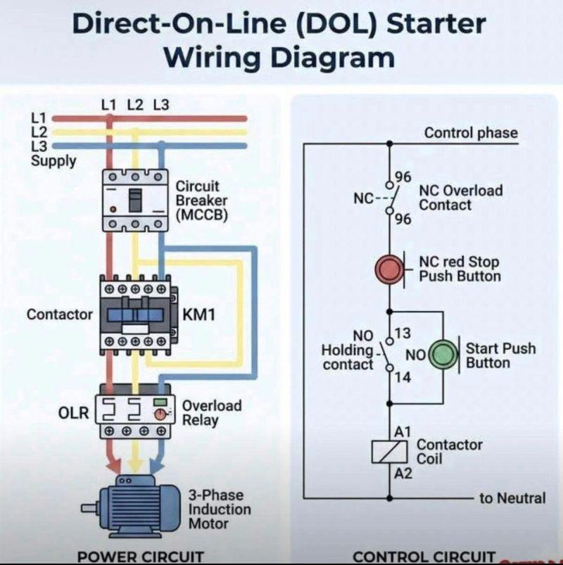

02_DOL_Starter - DOL starter: Direct-on-line start
1. Purpose of a DOL starter
A Direct-on-Line (DOL) starter starts an electric motor by connecting it directly to the supply voltage through a switching and protection arrangement.
It is one of the simplest methods of starting a three-phase squirrel-cage induction motor. When the contactor closes, the motor receives the available supply voltage directly, subject to the supply and circuit voltage drop.
A typical DOL starter includes:
- Circuit breaker, fuse, or other short-circuit protection.
- Contactor for switching motor power.
- Overload relay for motor overload protection.
- Start and stop push buttons or equivalent control signals.
- Control circuit and holding contact.
- Motor and associated wiring.
- Protective earthing and any required interlocks.
Core principle: A DOL starter applies full supply voltage at startup. It does not deliberately reduce the motor's starting voltage.
2. Where DOL starters are used
Common applications include:
- Small and appropriately rated conveyors.
- Pumps.
- Fans and blowers.
- Small compressors, where the load and starting conditions permit.
- Auxiliary motors in industrial machines.
- General-purpose fixed-speed machinery.
DOL starting is suitable when the motor, load, electrical supply, and protection system can tolerate the starting current and torque.
It may be unsuitable when the supply is weak, the load requires controlled acceleration, the starting current is excessive, or the driven machine could experience damaging mechanical shock.
3. DOL starter power circuit

The power circuit carries the current required by the motor.
THREE-PHASE SUPPLY
L1 L2 L3
| | |
[Circuit protection]
| | |
[Contactor KM1]
| | |
[Overload relay]
| | |
U V W
[Induction motor]
The actual installation may use a motor-protection circuit breaker, separate fuses and a contactor, or another approved combination.
Main power-circuit components
1. Circuit protection
A fuse or circuit breaker provides short-circuit protection and may provide additional protection functions depending on its type and configuration.
It must be selected to coordinate with the motor, contactor, overload relay, cable, and prospective fault current.
2. Contactor
A contactor is an electrically operated switching device. When its coil is energized, the main contacts close and supply power to the motor.
When the coil is de-energized, the contacts open and disconnect the motor through the contactor.
3. Overload relay
The overload relay monitors motor current or an equivalent thermal model and trips when an overload condition persists beyond its operating characteristics.
Its trip contact is commonly wired into the contactor control circuit so that an overload trip de-energizes the contactor.
An overload relay is not a substitute for short-circuit protection.
4. Motor
In a standard three-phase DOL arrangement, the motor windings receive the supply line voltage when the contactor closes. The motor accelerates according to its torque-speed characteristics and the driven load.
4. DOL control circuit
A typical three-wire control circuit uses a normally closed stop push button, a normally open start push button, an overload relay contact, and a contactor auxiliary contact.
Control supply
|
[STOP PB]
NC contact
|
[OL relay]
NC trip contact
|
+------[START PB]------+
| NO contact |
| |
+------[KM1 AUX]-------+
| NO contact |
| |
+----( KM1 COIL )------+
|
Control return
This is a conceptual diagram, not a wiring-ready drawing. Actual terminal numbers and wiring depend on the control voltage, devices, and applicable electrical standards.
How the circuit works
- The control supply is available.
- The stop contact and overload relay contact are closed under normal conditions.
- Pressing START completes the coil circuit.
- The KM1 contactor coil energizes.
- The main contacts close and supply power to the motor.
- The KM1 normally open auxiliary contact closes.
- Releasing START does not interrupt the coil circuit because the auxiliary contact maintains the circuit.
- Pressing STOP opens the control circuit, de-energizing the coil and opening the main contacts.
- An overload trip opens its control contact and stops the motor.
The auxiliary contact provides the holding circuit, also called the seal-in or self-holding circuit.
Why use a three-wire control circuit?
A typical three-wire START/STOP circuit is designed so that a momentary start command does not automatically restart the motor after a control-power interruption.
If the control supply disappears, the contactor drops out. When supply returns, the motor remains stopped until a new start command is issued, provided the circuit is wired correctly and no automatic-restart logic overrides that behavior.
This helps prevent unexpected restarts. It is not, by itself, a complete machine-safety system.
5. DOL operating sequence
| Stage | Electrical action | Expected result |
|---|---|---|
| Stopped | Contactor coil de-energized | Motor disconnected through contactor |
| Start requested | START circuit completes | Contactor coil energizes |
| Starting | Main contacts close | Full supply voltage applied to motor |
| Running | Holding contact maintains coil circuit | Motor continues running |
| Stop requested | STOP circuit opens | Contactor drops out |
| Overload trip | Overload contact opens | Contactor drops out |
| Control-power failure | Coil loses power | Contactor normally drops out |
A DOL starter does not inherently confirm that the shaft has rotated or that the driven mechanism has completed its operation. A PLC or machine controller may need additional feedback for that purpose.
6. Starting current and starting torque
6.1 Starting current
At standstill, an induction motor can draw a current several times greater than its rated full-load current. The exact value depends on the motor design and supply conditions.
For many standard motors, direct-on-line starting current is roughly 5 to 8 times rated current, although actual values vary by motor.
For example, if a motor's rated current is 12 A and its starting current is six times rated current:
The motor may briefly draw approximately 72 A during starting under these assumed conditions.
This current is not necessarily sustained. It generally decreases as the motor accelerates.
6.2 Starting torque
DOL starting applies full supply voltage, allowing the motor to develop its available starting torque according to its torque-speed characteristics.
For an induction motor under comparable conditions, torque is approximately proportional to the square of applied voltage:
This relationship is an approximation and is useful when comparing voltage-reduction methods. Actual motor behavior depends on the motor design and operating condition.
DOL starting therefore provides more starting torque than reduced-voltage starting methods at the same motor frequency, all else being comparable. It also produces higher starting current.
6.3 Electrical and mechanical effects
High starting current can cause:
- Supply-voltage dips.
- Disturbance to nearby equipment.
- Protective-device coordination issues.
- Additional electrical and thermal stress.
Abrupt torque application can cause:
- Conveyor belt shock.
- Gearbox and coupling stress.
- Mechanical jerk.
- Movement of unsecured loads.
- Increased stress on belts, chains, and driven machinery.
The severity depends on the motor, driven load, electrical supply, and frequency of starts.
7. DOL starter protection
Different devices protect against different failure modes. Treating them as interchangeable is a popular way to create expensive troubleshooting exercises.
| Device | Primary function | Important limitation |
|---|---|---|
| Fuse or circuit breaker | Short-circuit protection, with functions depending on device type | Must be correctly rated and coordinated |
| Contactor | Switching the motor power circuit | Not inherently overload protection |
| Overload relay | Trips on sustained motor overload according to its characteristics | Does not replace short-circuit protection |
| Phase-loss or phase-monitoring device | Detects selected supply abnormalities | Protection depends on device capability and wiring |
| Earth-fault protection | Detects specified earth-fault conditions | Requirements depend on the installation and protective scheme |
| Emergency-stop system | Initiates the required safety response | A normal STOP push button is not automatically an emergency stop |
A motor-protection circuit breaker may combine several protection functions. Verify the exact model and configuration instead of assuming every breaker provides every type of motor protection.
Overload relay setting
The overload setting is generally based on the motor's nameplate current and the manufacturer's instructions, applicable standards, starting method, and relay characteristics.
Do not set the relay arbitrarily high to prevent nuisance trips. If a motor trips repeatedly, investigate:
- Actual mechanical load.
- Supply voltage and phase balance.
- Starting time and frequency.
- Motor cooling and ambient temperature.
- Motor and relay ratings.
- Wiring and configuration.
- Whether the correct trip class and protection arrangement have been selected.
8. Contactor and overload relay selection
8.1 Contactor
A motor contactor should be selected based on:
- Motor rated operational current and power.
- Applicable utilization category, commonly AC-3 for starting and switching squirrel-cage motors under the conditions covered by that category.
- Starting frequency and expected electrical life.
- Control-coil voltage and frequency or DC rating.
- Ambient temperature and enclosure conditions.
- Short-circuit coordination with the upstream protective device.
- Auxiliary contacts required by the control circuit.
Do not select a contactor only because its general-purpose current rating appears higher than the motor current. Motor switching duty matters.
8.2 Overload relay
Select an overload relay with:
- An adjustment range appropriate for the motor.
- Suitable trip characteristics for the starting conditions.
- Compatible contactor or starter configuration.
- Correct phase and ambient compensation features, as applicable.
- Correct reset method and auxiliary-contact arrangement.
A motor with a long acceleration time may require a different protection assessment than a motor that starts quickly under a light load.
9. DOL starter and PLC integration
A PLC can control a DOL contactor through an appropriate, correctly rated interface, while reading feedback signals to monitor the system.
PLC START REQUEST
|
v
Permissive / Interlock Logic
|
v
Contactor Coil Interface
|
v
KM1
|
v
Motor Starts
Possible feedback:
- Contactor auxiliary contact.
- Overload trip status.
- Motor-protection device status.
- Independent speed or rotation sensor, where required.
- Process condition or downstream machine status.
Typical PLC sequence
- Confirm that the machine is in the correct operating mode.
- Confirm that all required permissives are satisfied.
- Confirm that the motor is not already faulted.
- Issue the start command through the approved control interface.
- Verify contactor or running feedback within the expected time.
- If feedback is absent, raise a start-failure alarm.
- On a stop request or relevant fault, remove the run command according to the machine's control and safety design.
Important: A PLC output must not be connected directly to a contactor coil unless the output's electrical rating and circuit design permit it. An interposing relay or suitable interface may be required.
Safety functions must be designed and implemented according to the machine's risk assessment and applicable requirements. Ordinary PLC logic and a standard contactor are not automatically safety-rated.
10. Common DOL starter faults and troubleshooting
| Symptom | Possible causes | First checks |
|---|---|---|
| Motor does not start | Missing supply, open control circuit, failed coil, interlock active | Check supply, control voltage and circuit continuity |
| Contactor does not pull in | Incorrect coil voltage, broken coil, open STOP or overload contact | Check the coil rating and control path |
| Contactor pulls in but motor does not run | Open power phase, blown fuse, damaged cable or motor | Check power circuit and motor condition |
| Overload trips during starting | Excessive load, long acceleration, incorrect setting, supply issue | Check load, starting time and relay selection |
| Overload trips during normal operation | Mechanical overload, cooling problem, phase imbalance, motor defect | Measure and compare operating conditions |
| Contactor chatters | Low coil voltage, loose connection, incorrect coil supply, mechanical issue | Check coil voltage during operation and inspect connections |
| Motor rotates in the wrong direction | Phase sequence incorrect for the required direction | Isolate and verify the power connections |
| Contactor welds or contacts deteriorate | Excessive switching duty, fault current, incorrect selection or coordination | Inspect contact condition and review ratings |
| Motor hums but does not accelerate | Phase loss, mechanical seizure, unsuitable supply or motor fault | Stop promptly and investigate; do not leave it energized |
| Unexpected restart occurs | Automatic restart logic, control-circuit design issue, welded contacts or other fault | Review the circuit and machine restart behavior |
Practical fault-finding sequence
- Establish a safe condition and identify the affected equipment.
- Check the reported fault and operating history.
- Verify supply and protective-device status.
- Trace the control circuit from the command through the interlocks to the coil.
- Check contactor operation and auxiliary feedback.
- Inspect the overload relay and motor power circuit.
- Assess motor winding, cable, insulation, and mechanical condition using approved procedures.
- Restore the system under controlled conditions and verify correct operation.
Do not repeatedly reset an overload relay without identifying why it tripped.
11. Maintenance and inspection
Routine checks
- Inspect contactor contacts for wear, overheating, or damage.
- Check terminals for signs of overheating and looseness using the correct isolation and tightening procedures.
- Check the overload relay model, setting, trip indication, and condition.
- Inspect the enclosure for dust, moisture, and contamination.
- Check control wiring, push buttons, auxiliary contacts, and interlocks.
- Inspect motor ventilation, fan, bearings, and mechanical coupling.
- Review nuisance trips and starting frequency.
- Confirm that the installed circuit still matches the approved drawing.
Do not use live tightening as a routine maintenance method. Isolate and verify the absence of hazardous voltage before work unless a specifically authorized procedure requires otherwise.
Useful maintenance records
Record the motor nameplate current, overload setting, contactor model, upstream protective device, control voltage, motor duty, trip history, and any corrective actions.
For repeated faults, record the operating condition at the time of failure, such as loaded versus unloaded start, ambient temperature, or machine cycle stage. That information often reveals more than the fifth identical reset.
12. DOL versus other starting methods
| Characteristic | DOL | Star-delta | Soft starter | VFD |
|---|---|---|---|---|
| Starting voltage | Full supply voltage | Reduced winding voltage during starting | Controlled voltage ramp | Controlled voltage and frequency |
| Starting current | Generally highest of these methods | Reduced relative to DOL under suitable conditions | Controlled to configured limits | Depends on drive, load and settings |
| Starting torque | Full-voltage motor starting torque | Lower than DOL under comparable conditions | Depends on voltage/current control | Can provide suitable torque control when correctly configured |
| Speed control during running | No inherent variable-speed control | No inherent variable-speed control | Usually not intended for continuous speed control | Yes |
| Mechanical starting shock | Can be high | Generally reduced | Can be reduced | Can be managed through acceleration profiles |
| Wiring complexity | Lowest | Higher | Moderate | Higher, with drive configuration |
| Typical use | Simple fixed-speed loads | Suitable motors and loads needing reduced-voltage starting | Reduced starting stress | Variable-speed operation and more advanced control |
Star-delta starting is not automatically appropriate for every three-phase motor. The motor must have suitable winding connections and ratings for the intended supply and running configuration, and the load must be able to accelerate with the reduced starting torque.
13. Interview questions and answers
1. What is a DOL starter?
A starter that connects a motor directly to the supply voltage through switching and protection components.
2. Why is starting current high in DOL starting?
At standstill, the induction motor draws a high current because it has not yet accelerated to its normal operating condition. The exact current depends on the motor and supply.
3. What is the function of a contactor?
It switches the motor power circuit through an electrically operated mechanism.
4. What is the function of an overload relay?
It detects sustained overload conditions according to its characteristics and initiates a trip, commonly by opening the contactor control circuit.
5. Does an overload relay provide short-circuit protection?
Not ordinarily. A suitable fuse, circuit breaker, or other coordinated short-circuit protective device is required.
6. What is the purpose of the auxiliary holding contact?
It maintains the contactor coil circuit after the momentary START push button is released.
7. What happens when the STOP push button is pressed?
The control circuit opens, the contactor coil de-energizes, and the main contacts open.
8. Why might a DOL starter be unsuitable for a large motor?
Its high starting current may cause excessive supply-voltage dip, while the starting torque can impose mechanical stress. Suitability depends on supply capacity, motor ratings, load and applicable requirements.
9. Can a DOL starter control motor speed?
Not by itself. It starts and stops the motor at the supply frequency. Variable-speed operation generally requires a suitable drive system.
10. Why does a contactor chatter?
Possible causes include inadequate coil voltage, loose control wiring, incorrect coil supply, or a mechanical problem.
11. Why should the overload setting not be increased simply to stop nuisance trips?
The trip may be protecting the motor against a real overload or abnormal operating condition. Raising the setting without diagnosis can remove needed protection.
12. What is the difference between an emergency stop and an ordinary STOP button?
An emergency stop is part of a safety function designed to reduce risk under specified conditions. A normal STOP button is generally a process-control function and is not automatically safety-rated.
14. Practical exercises
Exercise 1: Starting current
A motor has a rated current of 16 A. Assume its DOL starting current is six times rated current.
Calculate the approximate starting current.
Answer: 96 A, using the stated assumption.
Exercise 2: Trace a no-start fault
A PLC issues a motor-start request, but the motor does not run.
Investigate:
- Is the start request active?
- Are machine permissives satisfied?
- Is control voltage present?
- Is the STOP circuit closed?
- Has the overload relay tripped?
- Does the contactor coil energize?
- Do the main contacts close?
- Is the three-phase supply present at the motor terminals?
- Is the motor mechanically free to rotate?
Use appropriate isolation and test procedures before inspecting power-circuit components.
Exercise 3: Diagnose repeated overload trips
A conveyor motor runs normally when unloaded but trips when carrying parts.
Investigate:
- Conveyor friction and mechanical binding.
- Load variation and accumulated material.
- Actual current on each phase.
- Voltage imbalance or phase loss.
- Acceleration time and starting frequency.
- Motor and overload relay ratings.
- Whether the motor is suitable for the actual duty.
Do not conclude that the overload relay is defective merely because it trips during production.
Exercise 4: Draw the control circuit
Draw a three-wire DOL control circuit containing:
- Control supply.
- Normally closed STOP push button.
- Normally open START push button.
- Normally closed overload trip contact.
- Contactor coil KM1.
- Normally open KM1 auxiliary holding contact.
Verify that the circuit drops out when STOP is pressed or the overload trips, and that releasing START does not stop the motor.
Exercise 5: Identify the installed arrangement
For an actual industrial motor, record:
- Supply voltage and rated current.
- Circuit protection type and rating.
- Contactor model and coil voltage.
- Overload relay model and setting.
- Control-circuit voltage.
- PLC or push-button start/stop method.
- Interlocks and running feedback.
- Motor application and starting behavior.
- Relevant electrical drawing and asset number.
15. Final mental model
A DOL starter has three central functions:
- Switching: The contactor connects and disconnects motor power.
- Protection: Appropriate protective devices respond to overloads and short circuits according to their functions.
- Control: The START/STOP circuit determines when the contactor is energized, subject to interlocks and the control design.
When troubleshooting, follow the energy path from the supply through protection, contactor, overload arrangement, and motor. Separately trace the control path from the start request through STOP, interlocks, overload contacts, and the contactor coil.
Keeping the power circuit and control circuit conceptually separate makes DOL faults much easier to locate.
Next topic: 02_PLAN_WISE_2026\02_INDUSTRY3_0\02_Auto_Tech\05_Motor_Control\03_Star_Delta
03_Star_Delta - Star-delta: Reduced-voltage start